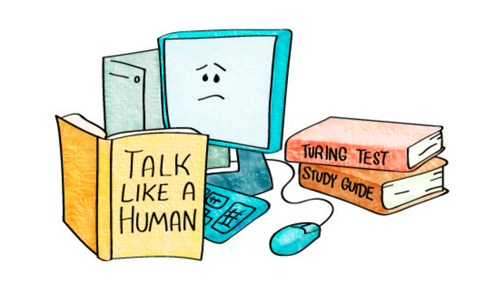

What is exam question answering?
We've created this website as community resource for researchers interested in machine intelligence, particularly in systems developed for or evaluated in an exam question answering (EQA) setting. We define EQA as a machine reading task in which the system is provided a set of texts (sometimes with visual aids) and a corresponding set of questions. The system is successful if it can process the text and provide the correct answers to the questions. These questions can be multiple choice, in which case a set of answer candidates is given, or short answer, where they are not.Why?
As artificial intelligence has matured as a field, many researchers have attempted to define what it means for a machine to be intelligent, and how to measure our progress in creating intelligent machines. While the Turing test has emerged as the most notable, it is a poor fit for quickly and comparatively evaluating how well a machine can read and reason.
In recent years, more attention has been placed on the use of exams, quizzes, as word games as a measure of these skills, and systems such as IBM's Watson system outperformed human competitors on Jeopardy!
In recent years, more attention has been placed on the use of exams, quizzes, as word games as a measure of these skills, and systems such as IBM's Watson system outperformed human competitors on Jeopardy!